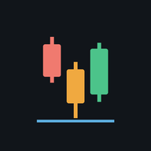

Otwieram Skanery Claude…
Otwórz Skanery w aplikacji ClaudeKrok 1 — sprawdź, który link działa
Jeśli widzisz tę stronę w karcie otwartej z aplikacji Claude, najpierw ⋮ → „Otwórz w Chrome”. Potem stuknij wariant A. Gdy otworzy się aplikacja Claude z widokiem Skanerów, wróć tutaj. Jeśli nie, spróbuj wariantu B.
Wariant A Wariant BKrok 2 — skrót na pulpicie
Stuknij przycisk wariantu, który zadziałał, a potem w Chrome: ⋮ → „Dodaj do ekranu głównego” (albo „Zainstaluj aplikację”).